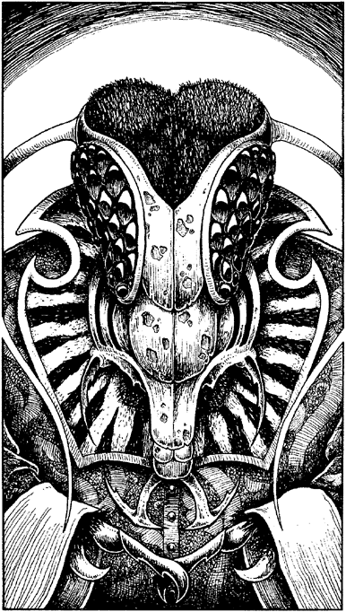

201
One of the bowls begins to emit a faint humming sound. The surface of its silvery liquid swirls and glows brighter, casting a phosphorescent light onto the domed ceiling. The sparkling mist slowly clears and a strange image takes shape, condensing and forming into something wholly alien, something that resembles the head of a monstrous fly. Its great multi-faceted eyes stare down at you, gleaming darkly with black fire, like two huge clusters of evil jewels.

‘Tan-ash-okja Nadoknar Gnaag!’ booms a ghastly, rasping voice. Then, with a stifled cry of rage and recognition, the image clouds over and the light fades to a dull glow. The terrible visage of Darklord Gnaag has disappeared.
‘By the gods!’ gasps Paido, shocked to the core by what he has seen. ‘What manner of beast was that?’ But you do not reply, for you sense that he already knows the dreadful answer.
Swiftly you search the chamber. Behind a throne-like chair of chiselled stone you discover several useful items: a Sword, a Bow, 3 Arrows and enough food for 2 Meals. Also, set into the back of the chair, is a lever. It activates a portal in the opposite wall. The tapestry that conceals it is drawn aside, and you can see a stairway, flanked by torches, descending to a passage far below.
‘Come,’ says Paido. ‘This room chills my blood.’ You move to follow him as he descends the stairs, stopping briefly to kick over the bowl of glowing, silvery liquid that projected the image of Darklord Gnaag.